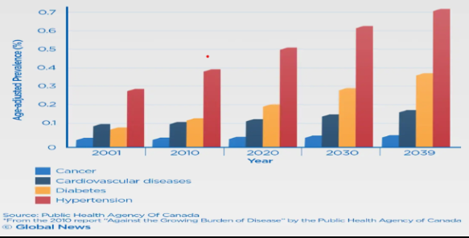

Non-communicable diseases
A non-communicable disease is a disease that is not transmissible directly from one person to another. The term NCDs refers to a group of conditions that are not mainly caused by an acute infection result in long-term health consequences and often create a need for long-term treatment and care. These conditions include diabetes, hypertension, cardiovascular diseases, cancers and chronic respiratory diseases.

Common non-communicable diseases in Myanmar

- Diabetes
- Hypertension
- Cardiovascular diseases
- Chronic respiratory diseases
- Stroke
- Cancer
- Depression
- Arthritis
- Osteoporosis
Can NCDs Prevented?
Many NCDs can be prevented by reducing common risk factors such as tobacco use, harmful alcohol use, physical inactivity and unhealthy diets. Many other important conditions are also considered NCDs such as mental health disorders.
Causes rate and death rate of non-communicable diseases in Myanmar
Key Facts:
Non-communicable diseases(NCDs) kill 41 million people each year worldwide, equivalent to 71% of all deaths globally. Each year, 15 million people die from a NCD between the ages of 30 and 69 years; over 85% of these premature deaths occur in low and middle income countries.
Cardiovascular diseases account for most NCD deaths, or 17.9 million people annually, followed by cancers (9.0 million), respiratory diseases (3.9 million) and diabetes (1.6 million) globally.
Tobacco use, physical inactivity, the harmful use of alchohol and unhealthy diets, all increase the risk of dying from a NCD.
Detection, screening and treatment of NCDs, as well as palliative care, are key components of the response to NCDs.


Modifiable Behavioural Risk Factors
Modifiable behaviours increase the risks of NCDs. Tobacco Accounts for over 7.2 million deaths every year (including from the effects of exposure to second-hand smoke) and is projected to increase markedly over the coming years. 4.1 million annual deaths have been attributed to excess sort/sodium intake. More than half of the 3.3 million deaths attributable to alchohol use are from NCDs, including cancer. 1.6 million deaths annually can be attributed to insufficient physical activity.
Metabolic Risk Factors
Metabolic Risk Factors contribute to 4 key metabolic changes that increase the risks of NCDs:
- Raised blood pressure
- Over weight/obesity
- Hyperglycemia (high blood glucose levels) and
- Hyperlipidemia (high levels of fat in the blood).
In terms of attributable deaths, the leading metabolic risk factors globally is elevated blood pressure, followed by over weight and obesity, and raised blood glucose.